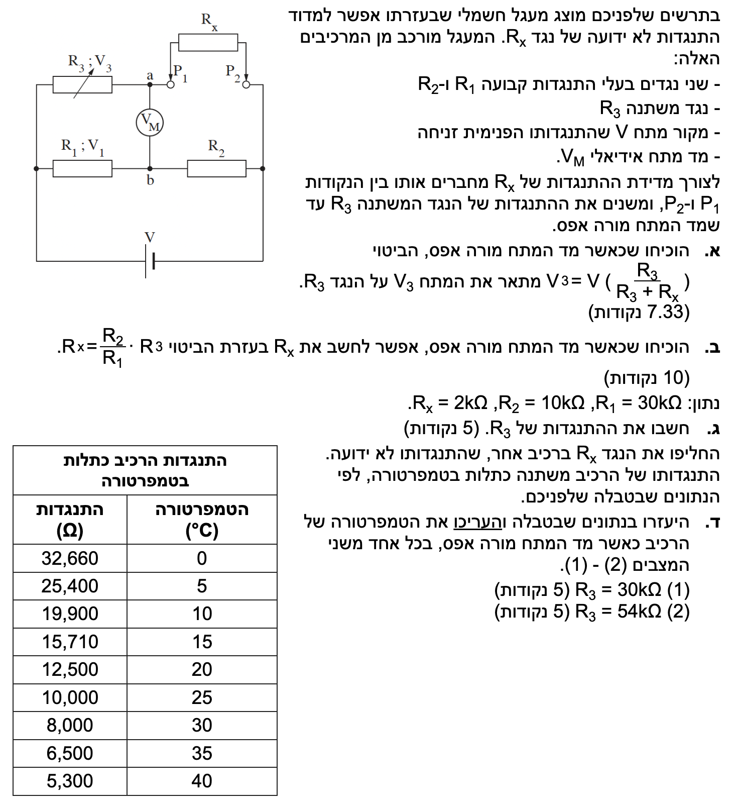

פתרון מוסבר ומודרך, צעד-אחר-צעד

נתון מד מתח אידיאלי. תכונתו של מד מתח אידיאלי היא שהתנגדותו הפנימית אינסופית, ולכן לעולם לא יזרום דרכו זרם (ללא קשר לערך המתח שהוא מודד). בנוסף ובנפרד, נתון כי במקרה זה מד המתח מורה על אפס (\(V_M = 0\)). במעגל מצויים גם מקור מתח אידיאלי \(V\), ונגדים \(R_1, R_2, R_3, R_x\).
עלינו להוכיח מתמטית את הביטוי עבור המתח הנופל על הנגד המשתנה \(R_3\): \( V_3 = V \left( \frac{R_3}{R_3 + R_x} \right) \).
נשתמש בחוק אוהם עבור מתח וזרם, ובנוסחה לחישוב התנגדות שקולה של נגדים המחוברים בטור. העיקרון הפיזיקלי המנחה כאן הוא שכאשר אין זרם דרך מד המתח, הענף העליון (הכולל את \(R_3\) ו-\(R_x\)) הוא ענף טורי רציף ללא פיצול זרם.
כיוון שמד המתח אידיאלי (התנגדותו אינסופית), לא יזרום דרכו זרם כלל. לכן, הזרם העובר בנגד \(R_3\) אינו מתפצל בצומת \(a\), אלא ממשיך במלואו ועובר גם דרך הנגד \(R_x\). מכאן שהנגדים \(R_3\) ו-\(R_x\) מחוברים בטור מושלם בענף העליון של המעגל (ללא תלות בכך שהמתח הנמדד עליו הוא אפס). נגדיר את הזרם הכולל הזורם בענף זה כ- \( I_{top} \).
ההתנגדות השקולה של הענף העליון, המחובר במקביל למקור המתח, היא סכום ההתנגדויות:
מתח המקור \(V\) נופל במלואו על הענף העליון. נשתמש בחוק אוהם כדי לבטא את הזרם הכולל בענף זה:
המתח על הנגד \(R_3\), שאותו אנו מסמנים ב- \(V_3\), מחושב אף הוא לפי חוק אוהם כמכפלת הזרם העובר בו בהתנגדותו:
נציב את ביטוי הזרם \( I_{top} \) שמצאנו לתוך המשוואה למתח \(V_3\), ונסדר את המשוואה ונקבל את הביטוי המבוקש:
מסקנה:
\[ V_3 = V \left( \frac{R_3}{R_3 + R_x} \right) \]
מ.ש.ל (מה שנדרש להוכיח)
מד המתח מורה שוב על אפס. אנו נשענים על ההבנה מהסעיף הקודם כי במצב זה המעגל מתנהג כשני ענפים מקבילים נפרדים, וכי מתקיים שוויון פוטנציאלים בין נקודות החיבור של מד המתח.
עלינו להוכיח את הקשר למציאת ההתנגדות הלא ידועה: \( R_x = \frac{R_2}{R_1} \cdot R_3 \).
העיקרון הפיזיקלי המרכזי כאן הוא שוויון פוטנציאלים חשמליים. מד מתח המורה אפס מעיד על כך שהפרש הפוטנציאלים בין הנקודות אליהן הוא מחובר (\(a\) ו-\(b\)) הוא אפס.
נסמן את הפוטנציאל בנקודה \(a\) (בין \(R_3\) ל-\(R_x\)) כ-\(V_a\), ואת הפוטנציאל בנקודה \(b\) (בין \(R_1\) ל-\(R_2\)) כ-\(V_b\). מכיוון שמד המתח מורה אפס, מתקיים שוויון הפוטנציאלים:
משמעות הדבר היא שהמתח "שנפל" על הנגד \(R_3\) בענף העליון זהה למתח ש"נפל" על הנגד \(R_1\) בענף התחתון. נסמן מתחים אלו ב-\(V_3\) ו-\(V_1\) בהתאמה:
מכיוון שהצד הימני של הנגדים \(R_x\) ו-\(R_2\) מחובר לאותו צומת (לאותו פוטנציאל), וכן צידם השמאלי נמצא כעת באותו פוטנציאל (\(V_a=V_b\)), נובע כי גם המתח עליהם שווה. נסמן:
נבטא את המתחים באמצעות הזרמים. יהי \(I_{top}\) הזרם בענף העליון ו-\(I_{bottom}\) הזרם בענף התחתון:
נחלק את המשוואות אחת בשנייה, צד ימין בצד ימין וצד שמאל בצד שמאל:
הזרמים מצטמצמים, ונקבל משוואת יחס בין הנגדים:
נבודד את ההתנגדות הלא ידועה \( R_x \) על ידי כפל בהצלבה:
מסקנה:
\[ R_x = \frac{R_2}{R_1} \cdot R_3 \]
מ.ש.ל
נתונים כעת ערכים מספריים עבור המעגל כשהגשר מאוזן:
\( R_x = 2 \text{ k}\Omega \)
\( R_2 = 10 \text{ k}\Omega \)
\( R_1 = 30 \text{ k}\Omega \)
לחשב את התנגדותו של הנגד המשתנה \(R_3\).
נשתמש בקשר ההתנגדויות של גשר ויטסטון מאוזן שהוכחנו בסעיף הקודם.
ניקח את הנוסחה שמצאנו בסעיף ב' ונבודד מתוכה את הנעלם שלנו, \(R_3\):
נציב את הערכים המומרים שמצאנו בשלב הנתונים:
נצמצם את האפסים בשבר (חלוקה מניבה 3):
מסקנה: \[ R_3 = 6000 \, \Omega \]
הנגד \(R_x\) הוחלף ברכיב חדש שהתנגדותו תלויה בטמפרטורה (נתוניו בטבלה).
הנגדים \(R_1 = 30000 \, \Omega\) ו-\(R_2 = 10000 \, \Omega\) נשארו ללא שינוי.
הגשר מאוזן שוב בשני מצבים שונים (מד המתח מורה אפס):
מצב (1): \( R_3 = 30 \text{ k}\Omega \)
מצב (2): \( R_3 = 54 \text{ k}\Omega \)
לחשב את ההתנגדות של הרכיב החדש בכל אחד מהמצבים, ובעזרת הטבלה להעריך את הטמפרטורה של הרכיב בכל מצב.
אנו שוב משתמשים במשוואת הגשר המאוזן כדי למצוא את ההתנגדות הלא ידועה (כעת זה הרכיב תלוי הטמפרטורה, נסמן אותו כ-\(R_{new}\)). לצורך שערוך הערכים נשתמש בהערכה או באינטרפולציה לינארית.
נציב את נתוני המצב הראשון במשוואת הגשר כדי למצוא את התנגדות הרכיב:
כעת, ניגש לטבלה ונחפש את הערך \(10,000 \, \Omega\). ניתן לראות כי ערך זה מופיע בצורה מפורשת בטבלה, ומתאים בדיוק לטמפרטורה של \(25^\circ\text{C}\).
נציב את נתוני המצב השני במשוואת הגשר:
אם נחפש את הערך \(18,000 \, \Omega\) בטבלה, נגלה שהוא אינו מופיע במדויק. הוא נמצא בין ההתנגדות \(19,900 \, \Omega\) (שמתאימה ל-\(10^\circ\text{C}\)) לבין ההתנגדות \(15,710 \, \Omega\) (שמתאימה ל-\(15^\circ\text{C}\)).
נשתמש בקירוב לינארי (אינטרפולציה) כדי להעריך במדויק את הטמפרטורה התואמת. נמצא תחילה את שיפוע השינוי בקטע זה (השינוי בהתנגדות לעומת השינוי בטמפרטורה):
נבנה משוואת קו ישר העובר בנקודה \((10, 19900)\):
נציב את ההתנגדות שחישבנו ונחלץ את הטמפרטורה \(T\):
נעגל את התוצאה ל-3 ספרות מהותיות כמקובל.